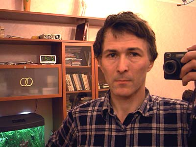

My name is
Eugene Kornienko
address:
cordially@narod.ru
Also you may write comments at the end of this page
Write me
- your comments about my photos and about photography
- your tips on tropical fish aquarium
- your remarks about home-made things, and what add else
- what else is worth photographying on vacations
- which photos are bad, what is wrong on the site

If you copy or show a photo or text from my page at your site please do active reference to the page or to my site
Author of the site

I'm from 1955. The site was created in 1996. So we are quite old.
The photo section of the site is updating about once a month, the section about origin of consciousness and the physical world is not updated for some years.
I have had different photo cameras. They were Russian Smena , Zorky , Zenith . In 2000 I started using a digital camera HP-C200 , then Nikon-cp880, Nikon-cp4500, Fuji-f30 . They are quite good pocket-size cameras.
I like photographing flowers, fish, bugs. Meanwhile usually I don't know their scientific or even popular names. Sometimes I refine names and change pages with the photos.
In nearest plans I'd like to add some new underwater photos from Red Sea. Also for recent years I visited Rhodos and Vienna. There are some good photos about these sites.
Eugene Kornienko